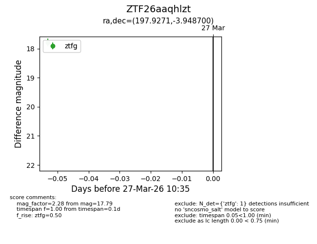
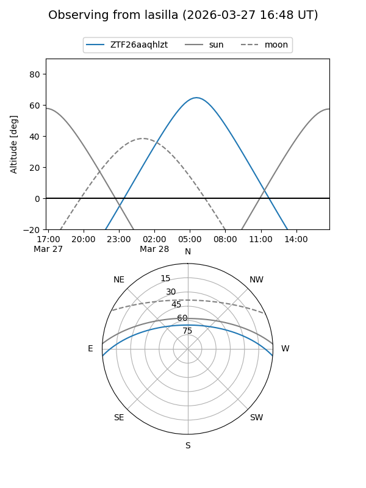
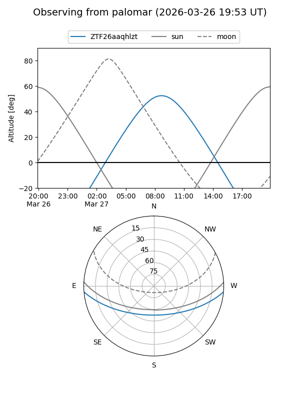

ZTF26aaqhlzt
Target ZTF26aaqhlzt at 2026-03-27 10:38
Aliases and brokers:
FINK: link
Lasair: link
ALeRCE: link
alt names
ZTF26aaqhlzt (ztf,fink_ztf)
Coordinates:
equatorial (ra, dec) = 197.9271,-3.94870
equatorial (HMS+DMS) = 13:11:42.51,-03:56:55.32
galactic (l, b) = (312.6527,+58.53994)
Flags:
Photometry:
last ztfg=17.79
1 ztfg detections
Lightcurve

Visibility


Additional plots